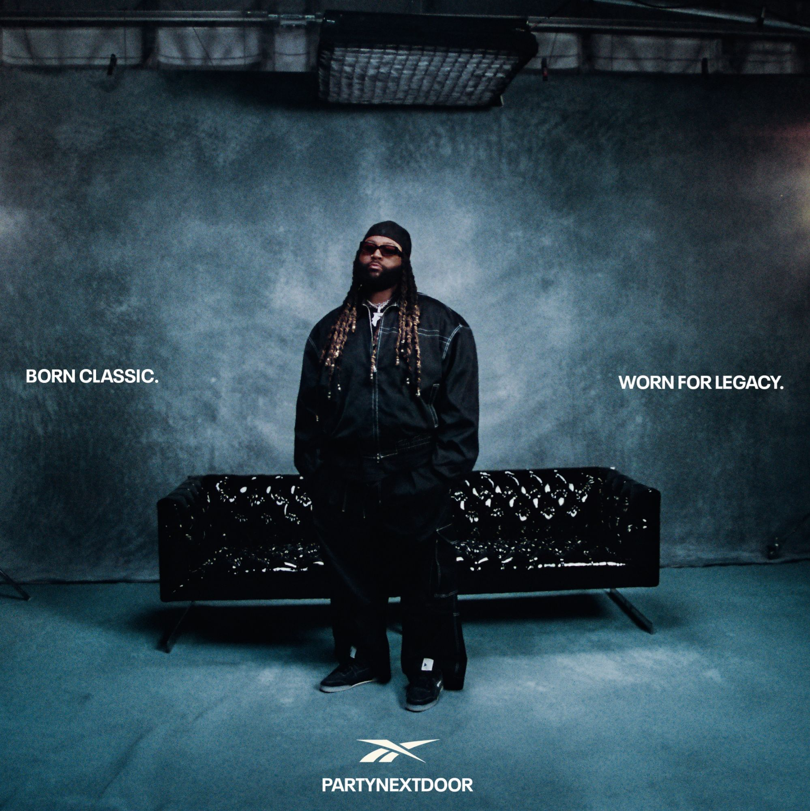

PARTYNEXTDOOR et l'ombre d'OVO
Il a écrit certains des plus gros tubes de la dernière décennie — sauf qu'on les connaît dans la voix des autres. PARTYNEXTDOOR est l'architecte silencieux d'un son qui a envahi la planète, et son histoire raconte tous ceux qui créent dans l'ombre pendant que d'autres récoltent la lumière.

L'homme derrière les tubes
Avant d'être une star, Party est une plume. On retrouve sa patte chez Rihanna, chez Drake, chez tous ceux qui ont voulu ce mélange de R&B nocturne et de mélancolie dansante. Il a défini une ambiance avant de définir une carrière : celle des fins de soirée, des sentiments flous, des lumières basses. Un son qu'on ne nomme pas mais qu'on reconnaît tout de suite.
C'est le paradoxe de sa place dans l'industrie : immensément influent, rarement cité. Beaucoup chantent ses idées sans savoir qu'elles sont les siennes. Et lui semble s'en accommoder, préférant l'ombre fertile à la lumière qui use. Il y a quelque chose de presque monacal dans sa façon de rester en retrait.
Son influence se mesure moins en récompenses qu'en empreintes. Chaque fois qu'un morceau joue sur cette corde douce-amère, ce tempo lent et cette voix noyée de réverbération, c'est un peu de lui qui passe. Il est partout sans être nulle part, un fantôme bienveillant dans la production moderne.
Le label qui change tout
Signer chez OVO, le label de Drake, c'est à la fois une bénédiction et une malédiction. On gagne une famille et une machine, mais on hérite aussi d'une ombre immense. Comment exister pleinement quand on partage la maison du plus grand nom de sa génération ?
Cette position l'a protégé autant qu'elle l'a enfermé. Protégé, parce qu'il a pu créer à son rythme, loin de la pression du tube immédiat. Enfermé, parce que dans l'esprit du public, il restera longtemps « le gars d'OVO », celui qu'on associe à un autre avant de l'associer à lui-même.
La patience comme stratégie
Dans une industrie obsédée par la vitesse, où il faut sortir sans cesse pour ne pas être oublié, Party a fait le pari inverse : prendre son temps. Construire une œuvre lentement, pièce par pièce, sans courir après la lumière.
Cette patience a un coût immédiat — moins de visibilité, moins de récompenses dans l'instant — mais elle bâtit quelque chose de plus durable. Les tubes de l'été s'oublient ; une ambiance, une signature, une couleur restent. Il a préféré marquer en profondeur plutôt que briller en surface.
C'est une leçon qui dépasse la musique. Dans un monde qui récompense le bruit immédiat, choisir la patience et la cohérence est presque un acte de résistance. Party prouve qu'on peut gagner sans se presser, à condition d'accepter que la reconnaissance vienne plus tard.
Sortir de l'ombre
Ses derniers projets montrent une envie nouvelle : celle d'être reconnu pour lui-même, pas seulement pour ce qu'il a donné aux autres. Le vrai défi, à ce stade, n'est plus musical — il est de réclamer sa propre place.
Ce virage est délicat. Après des années passées à écrire pour les autres, revenir au centre demande de réapprendre à occuper l'espace, à porter une attente, à exister sous son propre nom. C'est un deuxième départ, à un âge où beaucoup se contentent de ce qu'ils ont déjà bâti.
La lumière des autres
Party incarne un type d'artiste qu'on célèbre trop peu : le passeur, celui qui donne plus qu'il ne prend, qui allume des feux dont d'autres profitent de la chaleur. Dans une industrie du moi, de l'ego et de la visibilité, sa discrétion a quelque chose de presque héroïque.
Il y a ceux qu'on voit, et il y a ceux qui construisent ce qu'on voit. Party appartient à la seconde catégorie, la plus rare, et sans doute la plus précieuse. Son histoire rappelle que derrière chaque lumière, il y a toujours une main dans l'ombre qui l'a allumée.
Party n'a pas besoin d'être devant pour être partout. Son ambiance a déjà gagné, même sans son nom dessus.